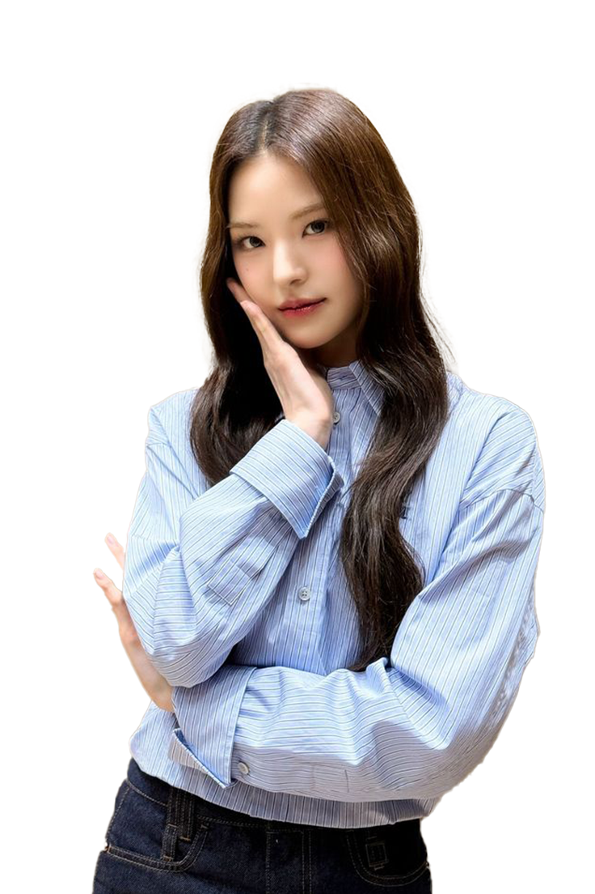

Jeemin
About Bang Jeemin
Bang Jeemin, a rising star in the K-pop industry, is a member of the sensational South Korean girl group Izna. Known for her captivating stage presence and versatile talents, Jeemin has quickly become a fan favorite. Born on March 15, 2001, in Seoul, South Korea, Jeemin discovered her passion for performing at a young age. Her journey into the world of K-pop began when she auditioned for a major entertainment company at the age of 16, showcasing her exceptional dancing and vocal skills.
Jeemin's dedication to her craft is evident in her performances. She is renowned for her powerful dance moves and ability to connect with the audience. Her hobbies include cooking and spending time with her cats, which she often shares with fans on social media. Jeemin's love for animals and her down-to-earth personality have endeared her to many, making her a relatable and beloved figure in the K-pop community.
As a member of Izna, Jeemin has contributed to the group's success with her unique charm and talent. Her favorite Izna song is "Starlight," which she describes as a track that resonates deeply with her. Jeemin's future goals include exploring acting opportunities and releasing solo music. Fans eagerly anticipate her next steps as she continues to shine in the entertainment industry.
Fun Facts:
- Jeemin is fluent in Korean and English.
- She has two cats named Mochi and Bebe.
- Her favorite food is kimchi jjigae (kimchi stew).
- Jeemin loves watching anime in her free time.
Jiyoon
About Kim Jiyoon
Kim Jiyoon, the main vocalist of Izna, is known for her powerful voice and emotional performances. Born on August 10, 2000, in Busan, South Korea, Jiyoon grew up singing in church choirs and local competitions. Her passion for music led her to pursue a career in K-pop, and she joined Izna after impressing the judges with her vocal range during auditions.
Jiyoon's voice has been described as both soulful and versatile, capable of conveying deep emotions in every performance. Outside of music, she enjoys painting and often shares her artwork with fans. Jiyoon is also an advocate for mental health awareness and frequently speaks about the importance of self-care.
Fun Facts:
- Jiyoon is a trained classical pianist.
- She loves dogs and has a pet poodle named Coco.
- Her favorite Izna song is "Eclipse."
- Jiyoon dreams of collaborating with international artists.
Jongeun
About Lee Jongeun
Lee Jongeun, the lead rapper of Izna, is known for her sharp lyrics and dynamic stage presence. Born on December 5, 1999, in Incheon, South Korea, Jongeun grew up listening to hip-hop and was inspired by artists like CL and Jessi. She joined Izna after showcasing her rap skills during auditions, and she has since become a key member of the group.
Jongeun is also a talented songwriter and has contributed to many of Izna's tracks. In her free time, she enjoys writing poetry and exploring new music genres. Jongeun is passionate about empowering young women through her music and often incorporates messages of self-confidence in her lyrics.
Fun Facts:
- Jongeun is fluent in Korean and Japanese.
- She loves street fashion and often designs her own outfits.
- Her favorite Izna song is "Rebel Heart."
- Jongeun is a fan of martial arts and practices Taekwondo.
Koko
About Park Koko
Park Koko, the lead dancer of Izna, is known for her incredible dance skills and charismatic performances. Born on June 20, 2002, in Daegu, South Korea, Koko started dancing at the age of 8 and quickly became a standout performer. She joined Izna after winning several dance competitions and impressing the judges with her versatility.
Koko's dance style is a mix of contemporary and street dance, and she often choreographs routines for Izna. Outside of dancing, she enjoys shopping and fashion, often sharing her latest finds with fans. Koko is also an avid traveler and loves exploring new cultures.
Fun Facts:
- Koko is a fan of K-dramas and often binge-watches them.
- She has a collection of over 50 pairs of sneakers.
- Her favorite Izna song is "Neon Lights."
- Koko dreams of opening her own dance studio.
Mai
About Mai Nakamura
Mai Nakamura, the visual and vocalist of Izna, is known for her stunning looks and sweet voice. Born on April 12, 2001, in Osaka, Japan, Mai moved to South Korea to pursue her K-pop dreams. She joined Izna after impressing the judges with her vocal talent and stage presence.
Mai is also a talented photographer and often takes behind-the-scenes photos during Izna's activities. She enjoys traveling and often shares her travel photos with fans. Mai is passionate about promoting cultural exchange between Japan and South Korea.
Fun Facts:
- Mai is fluent in Japanese, Korean, and English.
- She loves sushi and often makes it at home.
- Her favorite Izna song is "Cherry Blossom."
- Mai is a fan of vintage fashion.
Saebi

About Choi Saebi
Choi Saebi, the maknae (youngest member) of Izna, is known for her bubbly personality and energetic performances. Born on September 3, 2003, in Gwangju, South Korea, Saebi joined Izna at the age of 17 after showcasing her singing and dancing skills during auditions.
Saebi is also a talented gamer and often streams her gameplay for fans. She enjoys watching movies and often recommends her favorites on social media. Saebi is passionate about connecting with fans and often interacts with them during live streams.
Fun Facts:
- Saebi is a fan of horror movies.
- She has a pet hamster named Choco.
- Her favorite Izna song is "Dreamcatcher."
- Saebi dreams of becoming a variety show host.
Sarang
About Yoon Sarang
Yoon Sarang, the main dancer and vocalist of Izna, is known for her elegant dance moves and soothing voice. Born on November 8, 2000, in Seoul, South Korea, Sarang started ballet at the age of 6 and later transitioned to contemporary dance. She joined Izna after impressing the judges with her dance skills and vocal talent.
Sarang is also an avid reader and often shares book recommendations with fans. She enjoys writing and has published several poems in literary magazines. Sarang is passionate about promoting literacy and often participates in book donation campaigns.
Fun Facts:
- Sarang is fluent in Korean and French.
- She loves classical music and often attends concerts.
- Her favorite Izna song is "Moonlight Sonata."
- Sarang dreams of writing a novel someday.